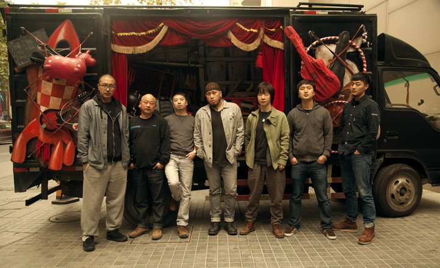
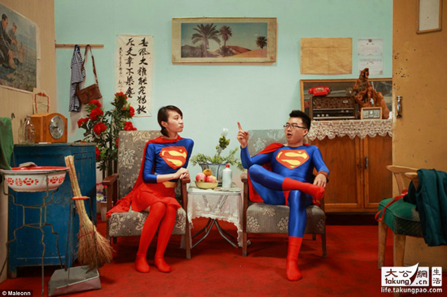
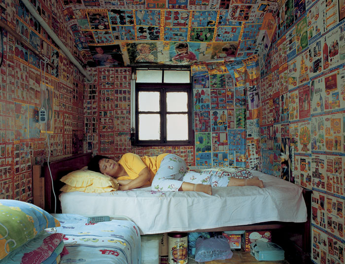

移动照相馆（给陌生人拍照） - 自行车公路旅行拍摄计划书
2008年底我独自骑行107国道北京至深圳，这是一趟纯纪实摄影之行。2012年夏天我组织了一个三人团队跑了318国道成都到拉萨段，这趟我主要还是拍照，两个助手拍视频。有了这两次的经验教训，我设计了一个新的公路拍摄方案，大家看看是否可行。
目标：同时生产公路背景的图片、文字和视频。
人员：单人，最多两人。
交通工具：自行车（或步行）。
路段：任何一条公路，环城线、国道、省道和县乡公路均可，可扩展到任何国家乃至环球。
图片：依然以沿途纪实为主，见啥拍啥。特别强调人文纪实。
住宿方式：沙发客（couch surfing），经济型酒店，也带帐篷睡袋备用

2012年，马良花了大半年的时间开着一辆大卡车穿越中国35个城市，拍摄了1,600人。马良的团队，从左至右依次是：负责纪录片拍摄的导演兼摄影师张逸炜、卡车司机窦仁友、制作总监方岚、总导演兼摄影师马良、道具师扎西达瓦、负责管理项目官方微博的李嘉瑞以及摄影助理陈定一。图片来源life.takungpao.com
当沙发客，一则省了住宿费，二来可以拍摄当地人（房东）的生活。如果住宿地没有沙发客，则路边随机借宿。我觉得这是拍摄当地人最好的方式。2012年暑假贵州一个大四学生独自骑单车回山东老家，一路基本都是借宿陌生人家，他没付过一分钱，也没有遇到任何安全问题，有时候还有房东主动给钱给他，也许是看学生比较穷，想资助他一下。
为了表示对路边人家的感谢，我觉得可以给点钱意思一下。但最好的方式是与路边人家合影留念，然后立马免费给照片。这就要求携带微型照片打印机（比如佳能CP900热升华打印机），机子重约800克，配电池、充电器和200张明信片尺寸的相片纸，总重两公斤。
每天至少拍摄一户人家（不管住不住都要拍一户）。以318国道为例，假如每天能拍两户，100天完成全程，这个项目就有两百户人家的影像资料，这个小型资料库就叫做公路中国人。征得拍摄对象愿意，尽量记录该户家庭的基本情况（可以匿名）。
项目一旦开始，则通过微博和微信宣传，沿途通过这个平台召集自愿拍照的人。
也不局限在路边人家，路上遇到的任何有趣的人都可以拍，随时可以打印照片。
尽量记录每张照片的GPS数据，以便五年或者十年后回访。

上海摄影师马良的移动照相馆作品选。图片来源life.takungpao.com
如果要当沙发客或者借宿，则不可能大团队行动，像上海摄影师马良的两辆车7个人环中国小组是不可能借宿的。我觉得两个人较好，最好一男一女，显得比较没有敌意。两三个男人去路边敲门，搞不好会被认为是打劫的。当然一个人也可以做这个项目，但也有被别人打劫的可能。一个人的话，行李也有点过多。
我并不是自虐派，我完全可以开汽车干这个事，但开汽车就完全没有借宿的理由，一脚油门就可以到县城或大城市。走路当然也可以干这个事，但走路不方便携带这么多行李，综合比较还是自行车最佳。
衣服：全套骑行服，花花绿绿的，戴上头盔，总之就是完全的自行车爱好者的形象。隐蔽式微型摄像头可以安装在头盔里（当然，谷歌眼镜之类的最好，如果能买到）。这种暗拍的视频主要是为了后期剪辑
（做花絮篇），来说明借宿的不容易，不是每次敲门都会遇到热心人家，遭白眼也都记录下来。一旦遇到好心人，稍微混熟了，就可以明目张胆的开拍照片和视频。
假若是两人组合，我的助手负责记录我和借宿人家沟通的视频，录下我和户主的对话（用无线蓝牙麦克风）。
拍摄器材：照片以SONY
Nex7为主力，诺基亚808手机备用。视频拍摄以Panasonic
GH3为主力。带一台笔记本（超级本），两个1TB移动硬盘（双备份）。照片打印机一套。小型碳素三脚架（一公斤左右的），室内合影三脚架必备。

《上海人家》图片选。摄影师：胡杨。来自
art218.com
为了保护这么多器材，自行车装备要全套防雨，尤其是驮包和随身包，当然也包括优质冲锋衣裤。
至于自行车，中档山地车和折叠车都行，去年暑假我骑行川藏线的是大行SP16折叠车
（20寸小轮）。
如果你想看看记录普通人家的优秀作品，请点击摄影师胡杨的《上海人家》摄影展：http://06.art218.com/Article/Exhibitions/Shanghai/200508/165.html
如果你想看看我独自完成的107国道自行车项目，请点击《107国道的107张照片》：http://www.midphoto.com/chinese/documentchina/communication/107nationalroad.htm
我的三人小组2012年自行车川藏线项目基本情况汇报，请点击：http://www.midphoto.com/chinese/whatsnew/2012/318d.htm
如果你对移动照相馆有兴趣，请点击上海摄影师马良的项目：http://www.chinadaily.com.cn/dfpd/whly/2012-09/28/content_15790347.htm

我拍摄107国道的折叠小轮车。2008年11月。
相比马良耗资近百万的汽车摄影团，我这个自行车项目花费很少，四个月拍完318国道或者312国道，5万元之内应该可以搞定。最近学校催我搞科研，我想把这个项目报上去，申请点经费，算是区域经济学研究课题。
这种项目对我来说最大的问题是厚着脸皮和陌生人套近乎，这是我最不愿意干的事。此项目并不一定要拍长途，我把这个计划写出来供大家参考，诸位大侠可以试试利用短假期就近拍摄公路人家
（只借宿一晚），最后maybe可以合起来搞成一个中国公路人家专辑。我打算先测试长沙市二环线大约50公里，这样的短途可以背包步行拍摄。
当然也可以拍超级长途，比如318国道或者312国道，或者绕地球一圈。长短不拘，皆大欢喜。
请大家提意见。
杨飞，
2013年